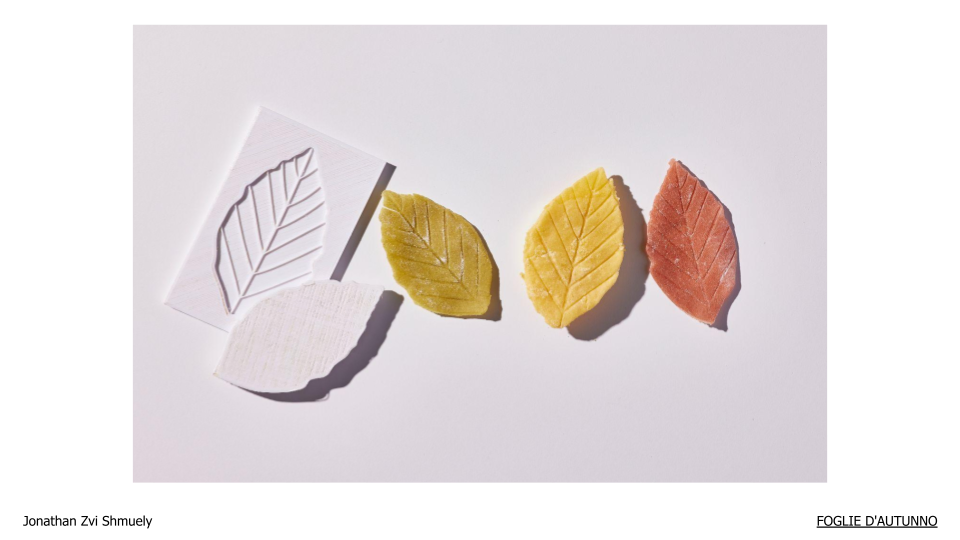
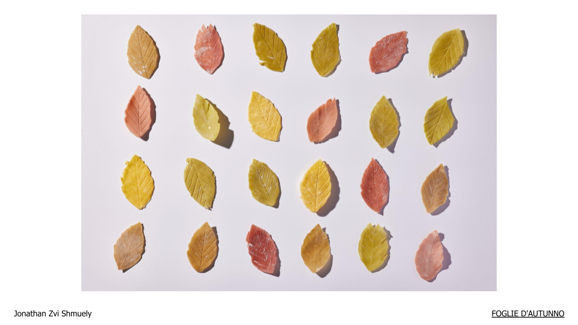
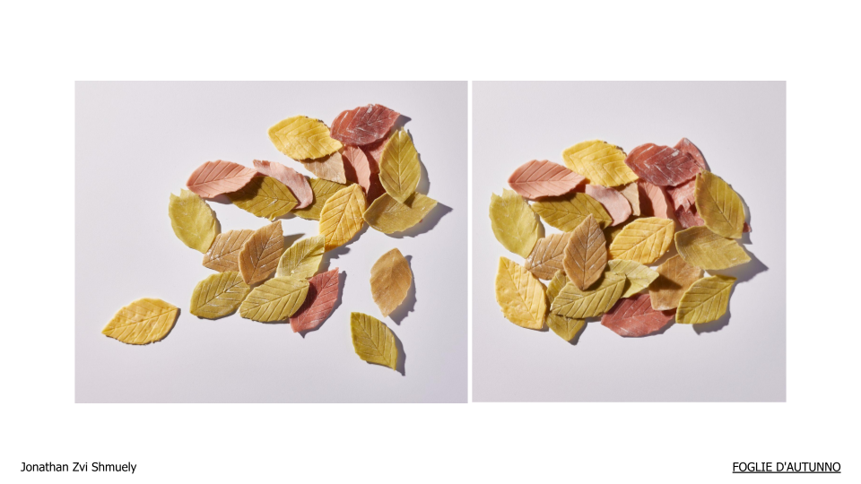

Foglie D'autunno
Pasta Design Course

- Project
- Pasta Design, Routine habits disorder course, Shenkar
- Location
- Ramat-Gan, IL
- Year
- 2021
About the project
My biggest inspiration is the natural world, which I try to incorporate in my designs.
For this project, I wanted an interesting and unique shape that was familiar and that would cook quickly.
The choice to design leaves was based on a few criteria.
A leaf’s texture is interesting and evokes associations with nature and wholesomeness.
In addition, the leaf shape and color are calming. The leaf pasta is thin and cooks quickly, making it ideal for layered lasagna and for smaller plated portions.

